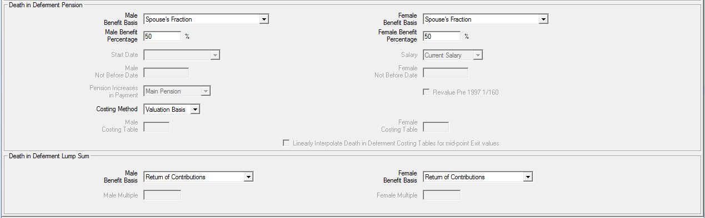
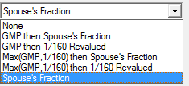

Valuing withdrawal benefits¶
If a withdrawal decrement applies for Actives, you must define how deferred benefits should be calculated in SuperVal. This article addresses how withdrawal benefits are set up and valued.
This article is based on V9.25 of SuperVal.
Any screenshots from earlier versions are not materially different.
Deferred pension (retirement)¶
The deferred-pension benefit where there is a withdrawal decrement for active members is determined by parameters on the Financial, Legislation and Leaving tabs, along with your Slice structure.
Slices tab¶
For each Slice (benefit tranche) you can specify whether the benefit revalues using one of the three rates available from the dropdown list. This is available under the Slice tab, under the Slice Indicators frame. The revaluation in deferment rates for excess and GMP are specified on the Financial and Legislation tabs as discussed below.
Financial and Legislation tabs¶
Deferred revaluation¶
The Rate field applies in deferment to the excess over GMP benefit. The frame below is found on the Financial tab.

Note that up to three different deferred revaluation rates can be specified (Rate, Rate 2 and Rate 3). The appropriate rate can be picked when defining each benefit slice.
Loading adjustment factors can also be applied. These will only be applied to the part of the Pup that has arisen from Slices indicated for ERF table 1 (even though such tables are not actually applied to the deferred pension). This would be typically used where there is a Barber window of service and therefore a need to reflect an earlier retirement age.
Equalisation of Retirement Ages
GMPs¶
The frame below is found on the Legislation tab and deals with how the GMP (standard data items) increases in active service, and re-values in deferment.

In deferment¶
The type of revaluation applicable to SPA after exit from active service is determined by the setting for Revaluation Type to SPA.
Active service¶
The field Section 148 Orders rate applies to the GMP while the member is still active and will therefore apply to the GMP up to the assumed (future) exit point.
NRA < SPA¶
Where retirement age is before SPA the make-up of the PUP at NRA will be determined by the setting for Revalue to NRA<SPA:
- If unchecked, GMP will not be re-valued
- If checked, the GMP will be revalued according to Revaluation Rate to NRA<SPA
Complete years will be used and not complete tax years (to NRA<SPA only).
An adjustment will be made at SPA for GMP revaluations to SPA not already in payment. The option used for the Franking Code field determines the amount of this adjustment.
The way SuperVal treats retirements before SPA is illustrated below:
| Pensions at NRA | Pensions at SPA |
|---|---|
| + Anti-Franking Guarantee | Pre 6/4/1988 GMP (at SPA) |
| Post 6/4/1988 GMP (at SPA) | |
| Main Pup (incl. NRA GMP) | Main excess over GMP (at SPA) |
| Special Pup (incl. NRA GMP) | Special excess over GMP (at SPA) |
| PenInc3 Pup (incl. NRA GMP) | PenInc3 excess over GMP (at SPA) |
| PenInc4 Pup (incl. NRA GMP) | PenInc4 excess over GMP (at SPA) |
The amount of step-up at SPA will be determined by the combination of the Revaluation Type to SPA Revaluation Rate to NRA<SPA and the Franking Code.
In summary, SuperVal will value temporary annuities between NRA and SPA. At SPA an addition is made for the required GMP revaluations and the pension amounts then valued as whole-life annuities.
Franking code¶
There are five options:
0 None
1 Partial Franking
2 Full Franking
3 Maximum Franking
4 No Anti Franking Guarantee
From 0 to 4 there is a reducing amount added at SPA for GMP revaluations.
IR maxima¶
SuperVal does not apply the IR Maximum rules specified on the Legislation tab to deferred benefits. The reason for this is that IR Maximum rules, generally speaking, occur when all the benefits are considered at retirement.
VarPrint and AccPrint¶
The calculation of the deferred pension at NRA at assumed future exit points is shown in Section 2400 (Leaving Service Pension) before any SPA adjustments. Loading adjustments to Pups are carried out in section 2450 (these apply to deferred amounts from Slices indicated for Early Retirement Factor Table 1 (ERF1)).
A summary of deferred pension at NRA is shown in Section 2460.
SPA Adjustments for GMP revaluations are shown in 2600.
The capitalised value (i.e. annuityNRA DNRA DAge at Exit) of these benefit amounts at the assumed exit point are shown in Section 6000. The capitalised values are shown for excess over GMP and GMP separately in the following sections:
Section Description
-------------------------------------------------------------
6000 GMP valued as payable from the later of SPA and NRA
6200 Main excess over GMP
6300 Special excess over GMP
6350 PenInc3 excess over GMP
6400 PenInc4 excess over GMP
All the excess over GMPs are valued as temporary annuities to SPA (where NRA<SPA) and as whole-life annuities from SPA after SPA adjustments.
Death-in-deferment benefits¶
Benefits payable on death in deferment can be pensions, lump sums or both.
The parameters are specified on the Leaving tab:

Death-in-deferment pensions¶
There are six options for this benefit:

- None
-
Select this if there is no pension benefit on death in deferment.
- GMP then Spouses Fraction
-
For this option the benefit calculations specified in the slices are used (i.e. accrual and salary).
The death-in-deferment pension benefit is WGMP plus Spouses Fraction, determined by:
- Benefit Percentage
- Offset Slices the percentage is applied to the benefits arising from slices with a slice number lower than the Offset Slices
- benefit calculations in the slices
Revaluation in deferment for the Spouses Fraction is as for the Slices used for the calculation of the benefit.
For example, if the Offset Slices is 3, the Spouses Fraction is calculated as a Benefit Percentage of benefits from Slices 2 and 1.
- GMP then 1/160 Revalued
-
The benefit calculations specified in the Slices are not used.
The death-in-deferment pension benefit is WGMP plus 1/160 pension, which equals 1/160 salary and service determined by:
- Salary select one of the nine salary projections specified
- Start Date and Not Before Date and the Not After Date for the Offset Slices
The 1/160th pension benefit would typically start at 6/4/1997 (or date joined pensionable service if later).
The Pension Increases in Payment rate needs to be specified for the 1/160th pension benefit. This benefit will be revalued in deferment at the deferred revaluation Rate specified on the Financial tab.
- Max (GMP, 1/160) then Spouses Fraction
-
The benefit calculations (i.e. accrual and salary) specified in the Slices are used.
The death-in-deferment pension benefit is the sum of:
-
The greater of WGMP, and 1/160 salary and service from the later of Start Date and Not Before Date up to the end date of the Offset Slices (specified on the Financial tab). (The comparison is made at the date of death if benefits are costed using the Valuation Basis or at the date of exit if costed using a Costing Table); and
-
Spouses Fraction, determined by the fields:
- Benefit Percentage
- Offset Slices the Percentage is applied to benefits arising from slices with a slice number lower than Offset Slices
- benefit calculations in the slices
Typically the end date of the slice specified as Offset Slices and start date for the Spouses Fraction would be 6/4/1997.
Specify the Increase in Payment rate for the 1/160th pension benefit (in excess of GMP).
Revaluation in deferment for the Spouses Fraction is as for the Slices used for the calculation of the benefit.
The 1/160th benefit can be revalued (or not) by this rate also by checking (or unchecking) the Revalue Pre-1997 1/160 field.
-
- Max (GMP, 1/160) then 1/160 Revalued
-
The benefit calculations specified in the Slices are not used. The death-in-deferment pension benefit is the sum of:
- The greater of WGMP, and 1/160 salary and service from the later of Start Date and Not Before Date up to the end date of the Offset Slices (specified on the Financial tab) (The comparison is made at the date of death if benefits are costed using the Valuation Basis or at the date of exit if costed using a Costing Table); and
- A 1/160 Revalued pension, which equals 1/160 salary and service determined by the fields:
- Salary select one of the nine salary projections specified
- Start Date, Not Before Date and the end date for the slice indicated by Offset Slice for determining service
Typically the end date of the slice specified as Offset Slices would be 6/4/1997. The latter of this date (as a Not Before Date) and Start Date would be the start date for the 1/160th revalued pension benefit.
Specify the Pension Increases in Payment rate for the 1/160th pension benefit.
The 1/160 Revalued benefit will be revalued in deferment at the deferred revaluation Rate specified on the Financial tab. The 1/160th benefit compared with the WGMP can be revalued (or not) by this rate also by checking (or unchecking) the Revalue Pre 1997 1/160 field.
- Spouses Fraction
-
The death in deferment pension benefit is Benefit Percentage multiplied by the benefits calculated in the Slices.
The pension will be revalued according to the rate specified in the Slices and the deferred revaluation Rate on the Financial tab.
Summary:
Option/Field 0 1 2 3 4 5
---------------------------------------------------
Percentage (M&F) X X X
Salary X X X
Start Date X X X
Not Before Date (M&F) X X X
Pension Increases in Payment X X X
Revalue Pre 1997 1/160 X X
Costing¶
The options for Costing Method are:
Costing Table
Valuation Basis
Note this field is not applicable to the death-in-deferment lump sum benefit.
Costing Table
Here you can specify tables for the annuity part of the death in
deferment liability.
These tables are specified in the _Costing Method_ field.
Valuation Basis
This option would normally be used.
Using this option means that the death-in-deferment pension benefit is
valued on the basis as specified for the category in the basis file.
Death-in-deferment lump sum¶
There are four options for this benefit:

- None
-
No lump sum benefit.
- Return of Contributions
-
This option will value standard data item Members Contributions (ACW) as returned on death in deferment.
On the Contributions tab you can apply a rate of interest for this benefit (ROC In Deferral Interest (% p.a.)). Note however, that it will assume the data item includes interest to the valuation date and the ROC In Service Interest (% p.a.) on the Contributions tab will apply from the valuation date until exit.
- Return of Contributions if no spouse
-
This option is the same as (
Return of Contributions) above except that contributions are returned only if there is no spouse on death in deferment.Whether or not there is a spouse is determined by the Proportion Married table specified on the Demographic tab. The relevant rate in the table at age at exit is applied (not age at death in deferment).
For example, if the proportion-married table has entries of 90% throughout. There is therefore a rate of 10% of no spouse on death in deferment. The value of benefit under this option would therefore be 10% of that under the above option (Return of Contributions).
- Multiple of Pension
-
Select this option for a lump sum payable on death in deferment of some multiple of the members pension. Then enter in the following fields for males and females the multiple to apply.
Franking Code examples¶
This field affects the pension amounts at SPA where NRA is before SPA.
There are five choices for members retiring before SPA:

The impact of each of these options is explained by the examples below.
Worked examples:
A male member retiring at 60 has a pension as follows
- Pension = 2,000
- GMP at 60 = 1,000 (included in above figure)
- GMP at 65 = 1,500
GMP revaluations between 60 and 65 are therefore 500 (1,500 less 1,000).
Suppose further that the pension increase rate is 5% pa.
The add-on at SPA for the GMP revaluations between 60 and 65 under each of the options are as follows:
- No Franking
-
All revaluation on the GMP is added to the pension at SPA So, the pension at SPA is:
2,000 1.055 + 500 = 3,052.56
- Partial Franking
-
Revaluation on the GMP between retirement and SPA, less scheme increases granted on the GMP, is added at SPA.
So, the pension at SPA is:
2,000 1.055 + [500 1,000 (1.055 1)]
= 2,552.56 + 223.72
= 2,776.28The item in square brackets is set to a minimum of zero.
- Full Franking
-
All increases on pensions between retirement and SPA are franked against revaluation on the GMP.
So, the pension at SPA is:
2,000 1.055 + [500 2,000 (1.055 1)]
= 2,552.56 + 0
= 2,552.56The item in square brackets is set to a minimum of zero.
- Maximum Franking
-
This option differs from Full Franking only if you have an early retirement decrement in your basis. For the early retirements the calculation is as under option 4. For the normal retirement the calculation is as under option 2.
- No Anti Franking Guarantee
-
No anti-franking guarantee is made at SPA. So, the pension at SPA:
2,000 1.055 = 2,552.56
VarPrints
Section 2600 shows the adjustments made to the deferred pension for the Franking Code. Cell 2616cF shows the Anti-Franking Guarantee. Under each of the options above the amount shown here would be:
Franking Code Anti-Franking Guarantee
---------------------------------------
0 500
1 223.72
2 0
3 0
4 0